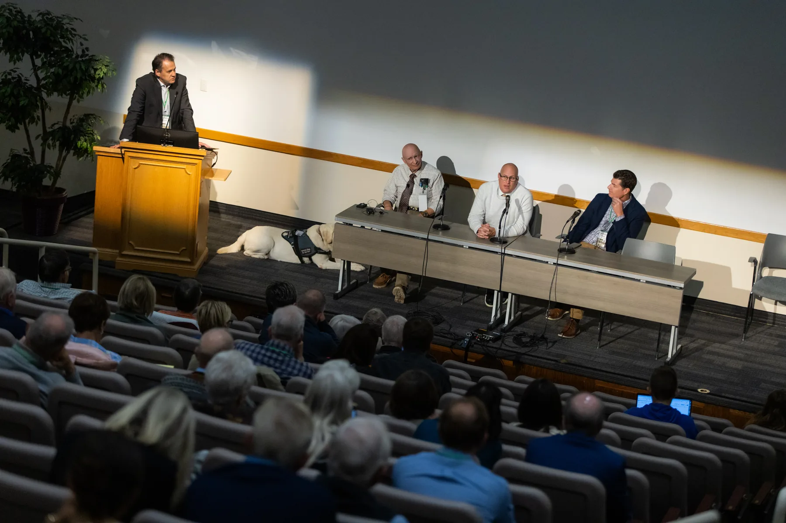
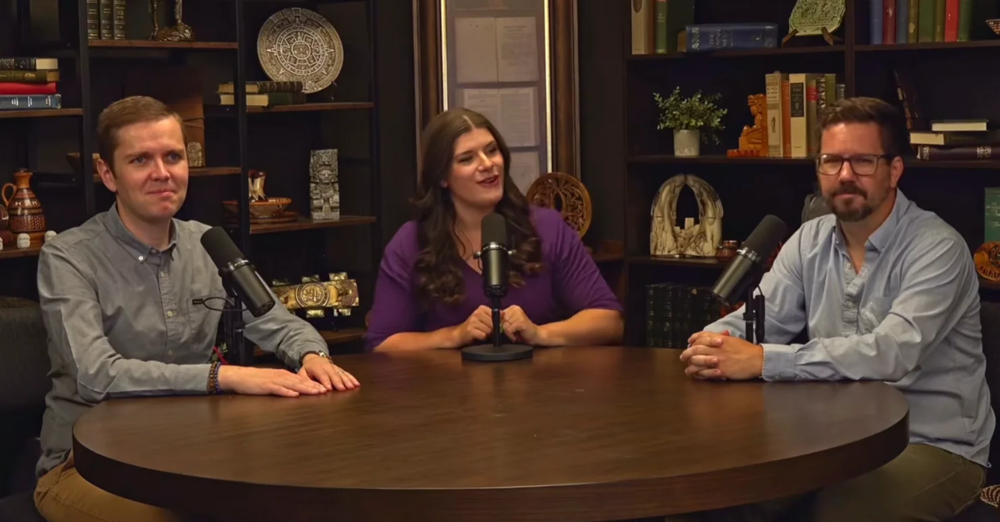

You came here for Bradley R. Wilcox.
He is one of six reasons to be in that room.
Bradley R. Wilcox speaks at the Book of Mormon Culture Conference on November 6 and 7, alongside the scholars, painters and storytellers who have given their careers to this book. Two days at the Provo Marriott.

Bradley R. Wilcox
Professor of Ancient Scripture, BYU
Speaking November 6 and 7 in Provo
The six names on the program

Terryl Givens
Senior Research Fellow, Neal A. Maxwell Institute
Honored Friday evening for achievement in Book of Mormon letters.

Rosalynde F. Welch
Associate Director, Neal A. Maxwell Institute
Scholar of scripture and theology, and a conference keynote.
Bradley R. Wilcox
Professor of Ancient Scripture, BYU
Keynote speaker across the two days in Provo.

Walter Rane
Painter
Recognized Saturday afternoon for his body of work.

Brad Pelo
President, The Chosen
Joins the Saturday session recognizing Walter Rane.

Jane Clayson Johnson
Journalist and author
Joins the Saturday session recognizing Walter Rane.
The rooms these people come from

Not a livestream and not a lecture hall of strangers. Panels, questions from the floor, and people who stay afterward to keep arguing about it.
Saturday afternoon belongs to Walter Rane
If you have seen a painting of the Book of Mormon in the last thirty years, there is a good chance you have seen his work.
The Saturday afternoon session recognizes Rane's career, with Brad Pelo, president of The Chosen, and the journalist Jane Clayson Johnson. The conference closes with a live recording of the Informed Saints podcast.

The conference closes on the record
Informed Saints records its closing episode in the room, with the conference audience. You are not watching a replay later. You are in it.